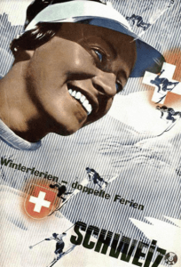
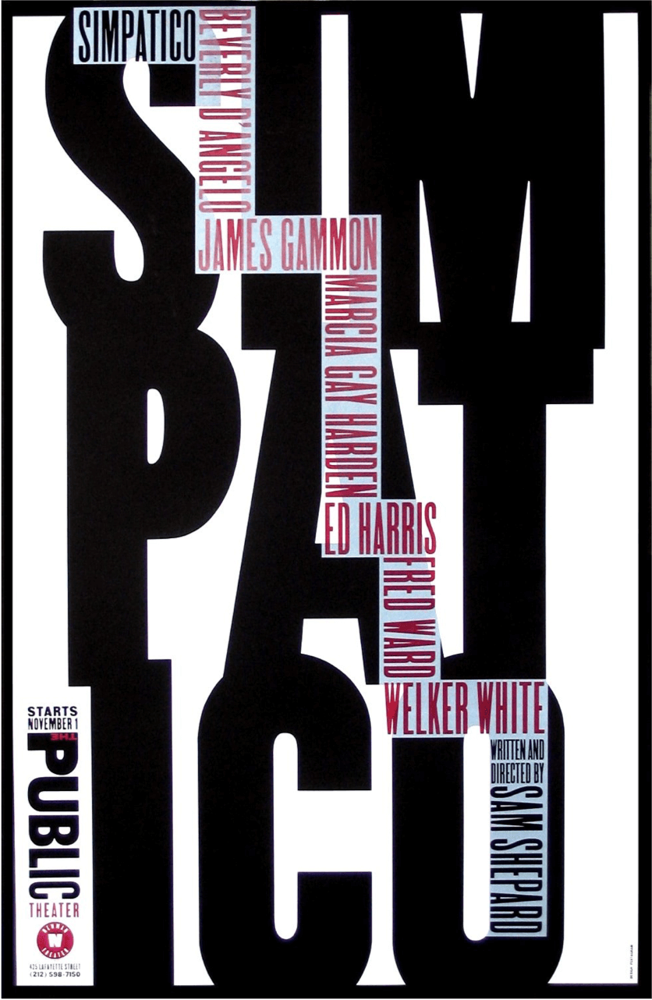
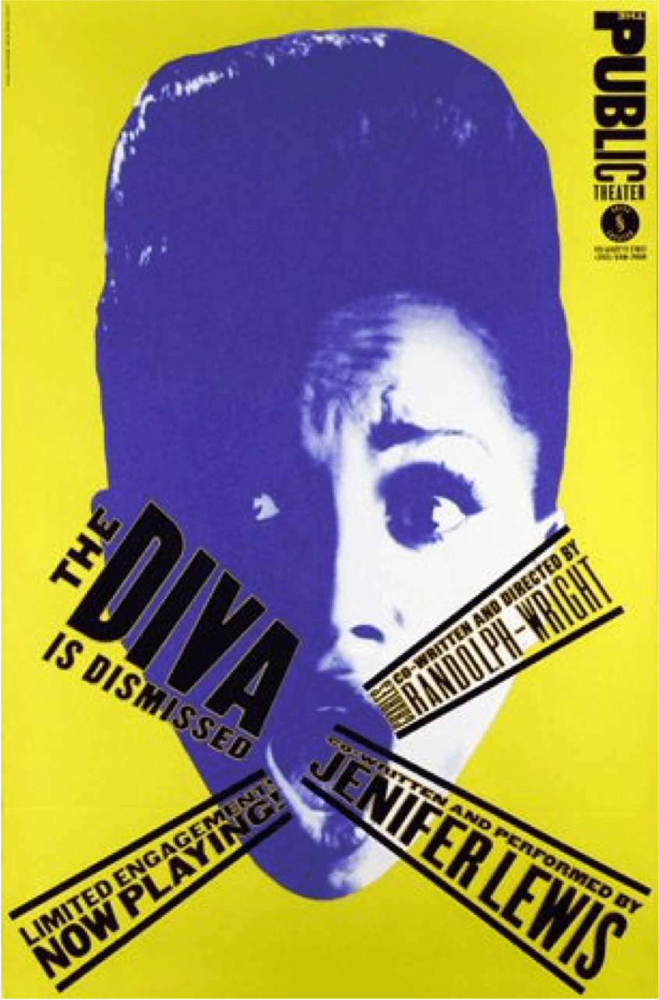
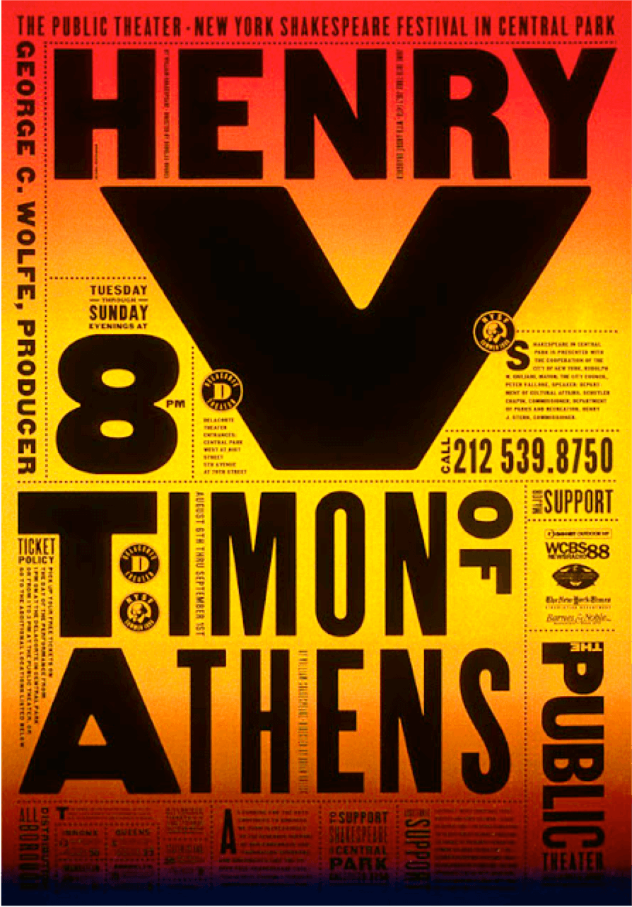
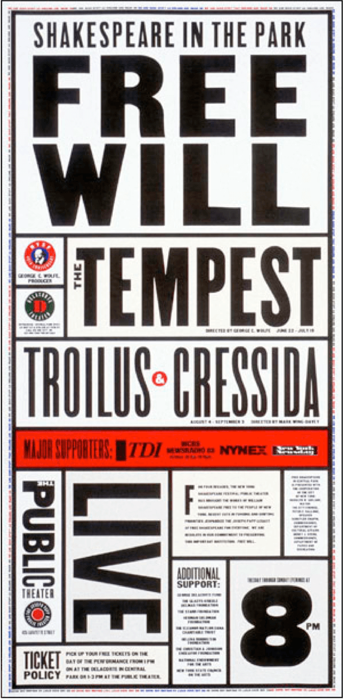

“Paula Scher is the master conjurer of the instantly familiar”
- TED 2009
A Beginning
Paula Scher's influence over the past several decades of graphic design cannot be understated. In a speaker profile, TED described her as a “master conjurer of the instantly familiar” due to her wealth of experience designing iconic identities for global brands.
Paula Scher was born in 1948 in Virginia and grew up in Philadelphia and Washington DC. During High School, she embraced Art, stating that it was “the first place where I felt like I actually belonged” and she became a publicity chairman for her school, designing posters and pamphlets for school dances and events.
She continued her enthusiasm with the arts and took up night classes Corcoran College of Art + Design. This would continue and would result in her applying to the Tyler School of Art. Her mother was less than supportive of Scher's interest in the arts and insisted Paula obtained a certificate in teaching so she had something to fall back on.
Scher attended college in 1966, and initially expected to become a painter but admitted that she couldn’t really draw and as a result she experimented with both metal working and print work. She came away from both feeling like she wasn't good at anything before discovering she had an affinity for graphic design in her junior year.
She graduated in 1970 and against her mother's advice (who said it would require talent) moved to New York City, where she was employed to design the insides of children's books.
Double Portrait: Paula Scher and Seymour Chwast Exhibition at PMA
Her Career
Scher's first major role in New York was with CBS Records in 1972. She initially joined CBS as part of the publicity team and wasn't involved with the design of album covers, which is what she wanted to do. She left CBS a year later, and joined Atlantic Records where she worked for a year designing various album covers and promotional materials. However, when she was 25 she returned to CBS Records to become their new Art Director for the East Coast.
For the next decade, Paula Scher would design almost 150 record covers each year and countless more ads and posters. She designed her album covers using imagery from popular culture, in an effort to engage with the audience and make them more inclined to buy the record. Ellen Lupton, a Curator at Cooper-Hewitt would describe her work as “accessible but smart” commenting that Scher preferred to invoke a mood or mysterious scenario than literal depictions of bands.
Her experiences with both CBS and Atlantic Records would leave her with a longstanding fascination for the internal power structures within large corporations, especially when it comes to in-house design teams determining how a job gets commissioned and completed.
She also quickly learned how best to present her work to clients. If she couldn't sell her work to her recording artists, she couldn't get it made, so she quickly became aware of how best to pitch ideas and explain her thinking.
In 1982, after growing tired of the music industry, Paula Scher left to form her own design agency, admitting that she had to start her own business to have a new challenge - (Koppel & Scher) with an old friend, Terry Koppel who at the time was a magazine designer. Scher commented that “If you get good at something and become known for it, then it’s time to change it. You’ve got to always grow.”
Together Scher and Terry Koppel began producing brand identities, product packaging and book covers.
Her most controversial piece during this period, was a poster for Swatch Watches. The marketing director of the Swiss firm asked Scher and Koppel to produce a poster that was reminiscent of 1950's America.
Scher's poster has gained a legacy and a spot in the AIGA Medalists 2001 collection. The poster featured a female skier, brandishing two Swatch watches on her arm against a Winter backdrop. For most, this would portray Swatch watches as an easy-going and fun accessory. However, for design students the poster was familiar.

Paula Scher had based the new campaign on a range of pieces by Herbert Matter, including the poster he designed in the 1930's for the Swiss National Tourist Office. The poster's were intended as a parody, a light-hearted nod at the past, again reflecting Swatch's playful side. She noted herself, “This poster was a visual joke, a parody of a famous poster by Herbert Matter.”
The poster's release was followed with harsh debate, with many academics and students would debate the use of nostalgic designs being 'reused' for modern pieces. Many would agree that Scher's work was just parody, but others had a less favourable outlook and and labelled it plagerism. Nevertheless, whether critics loved or hated the poster, it became a hit for Paula Scher and has become one of her most memorable works.
The years that followed would prove tough on America, with the Gulf War beginning in 1990, and with it came a recession. This marked the end of Scher and Koppel, with the two finding themselves at a loose-end due to the lack of work.
Woody Pirtle, a partner at Pentagram invited Scher for coffee and asked if she would be interested in joining. She joined them almost immediately after in 1991, and has stayed there ever since. Since joining Pentagram she has designed identities (Citibank, Microsoft), exhibitions (US Holocaust Memorial Museum) and editorial design (Metropolis).
Paula Scher's redesign of Metropolis Magazine
Designing Identities
As well as designing countless posters and album covers, Paula Scher has designed some of the most iconic and memorable brand identities.
One of Paula Scher's most remembered branding tasks came in 1994 with the Public Theatre in New York. Her series of posters for various productions have been labelled a 'landmark series' by Eye Magazine and now, 15 years on have been honoured by the Art Directors Club.
The theatre wanted Scher to devise a system that would help raise brand awareness and appeal to a more diverse audience. The result, was a use of heavy, bold typography that created a juxtaposition of street typography and a graffiti-like nature.
From 1993 to 2005, Scher worked closely with George C. Wolfe, who would become Director of the Public Theatre, Scher would later describe him (and the Public Theatre project) as her favourite client.
In 1995, Paula Scher and her team would create a poster for the Bring in’Da Noise, Bring in ‘Da Funk production that was playing in the Public Theatre. Scher noted that she was inspired by Victorian theatre posters, using multiple heavy typefaces, silhouetted photographs and a limited range of two or three colours.
Scher would work with George C. Wolfe, and later Oskar Eustis, who joined as the Theatre's artistic director in 2005, on numerous posters for a range of productions.
Apple
Mandarin

Banannas
Cherries
Orange
Melon
Lemon

Grapes

Peach

Pear
In 1998, Paula Scher was tasked with creating an identity for the multi-billion dollar company, Citi. The result was (and still is) widely regarded as one of the most iconic and recognisable logos in the world.
Scher designed the logo during an initial client meeting, later admitting that it took only a few seconds to sketch the initial idea for the logo on a napkin. Her partners at Pentagram were concerned that their clients would not pay for something that only took several seconds to design, but they did. Scher later said, "How can it be that you talk to someone and it’s done in a second? But it is done in a second. it’s done in a second and in 34 years, and every experience and every movie and every thing of my life that’s in my head."
Her ability to design such an iconic identity on a napkin in a few seconds was due to her wealth of experience that she had amassed over her varied career.
From 1998 onwards Paula Scher and Pentagram have designed numerous identities including an identity for the Museum of Modern Art in New York, the Metropolitan Opera and the New York City Ballet. More recently, she designed a new identity for the Atlantic Theatre Company.
In 2012, Scher also helped design a new identity system for both Microsoft Windows and Microsoft Office. She reportedly asked Microsoft "your name is Windows. Why are you a flag?” in response to their previous logo. The revised logo by Pentagram was 'reimagining the Windows logo as just that – a window.'
Her Other Work
Paula Scher's career is already so varied you would be forgiven for not acknowledging half of it, including brand identities for huge mega-corporations like Citi Bank, countless poster designs like those she designed for the Public Theatre in New York and hundreds of album covers designed at CBS Records.
However, some of her lesser known work includes commissioned super-graphics for public buildings. Scher herself refers to these large-scale designs as 'environmental graphics', transforming blank space with the use of vivid colours and unique typography. When asked about her recent commissioned work for the New Jersey Performing Arts Centre, she noted that she “essentially redrew the building in typography.”
Recently she was commissioned by the PAVE Academy Charter School, to turn their range of motivational and inspirational messages into environmental graphics. Scher worked closely with the architects for the new build, creating dimensional signage and bold super-graphics. The unique identity for the school has helped to freshen the existing brand, and create a memorable learning experience for students and teachers alike.
Alongside her professional work, Paula Scher also works on a range of fine art pieces in her free time. She spends most of this time creating incredibly detailed maps by hand. Her father, Marvin Scher was involved with cartography, creating a device for the US government to remove the lens distortion in aerial photography, so her interest in this area started at a young age.
Marvin Scher made sure to teach his daughter that all maps are distorted, not literal truths with information being based on the viewpoint of the mapmaker. Scher still acknowledges this in her own work, saying that her “painted maps are opinionated, biased and erroneous.”
She spends a great deal of time adding tiny details to each map, saying that “The process of painting these maps is time consuming and sometimes mindless.” The work forces her to have patience, which she herself says she lacks in her day job at Pentagram. Scher has previously described the maps as an “antidote to design” and says that in she could always retreat to her map designs in the future when she is done with designing professionally.
She finds that both art and design compliment each other perfectly, saying in a recent interview: “Design happens quickly on a computer and the painting is laborious. Design is social. Painting is isolating. Design has a purpose. Art has no purpose. I can't imagine one without the other.”
Conclusion
Paula Scher is just that, a perfect combination of both art and design creating a perfect fusion of the two. Her work spans many fields, and has certainly influenced many designers in creating their own work. As Computer Arts wrote, “Paula Scher continues to set standards in graphic design with bold imagery and a highly illustrative approach to typography.” Her work spans many different fields and has been seen by millions of people, many not stopping to acknowledge or recognise it, but for those who do - it's always something special.
Her work spans many different fields and has been seen by millions of people, many not stopping to acknowledge or recognise it, but for those who do - it's always something special. So next time you spot the Citi Bank logo, or pickup a copy of Boston's debut album, or even find yourself in the halls of the New Jersey Performing Arts Centre - take a second to admire the handiwork and dedication of the designer behind all of them, Paula Scher.